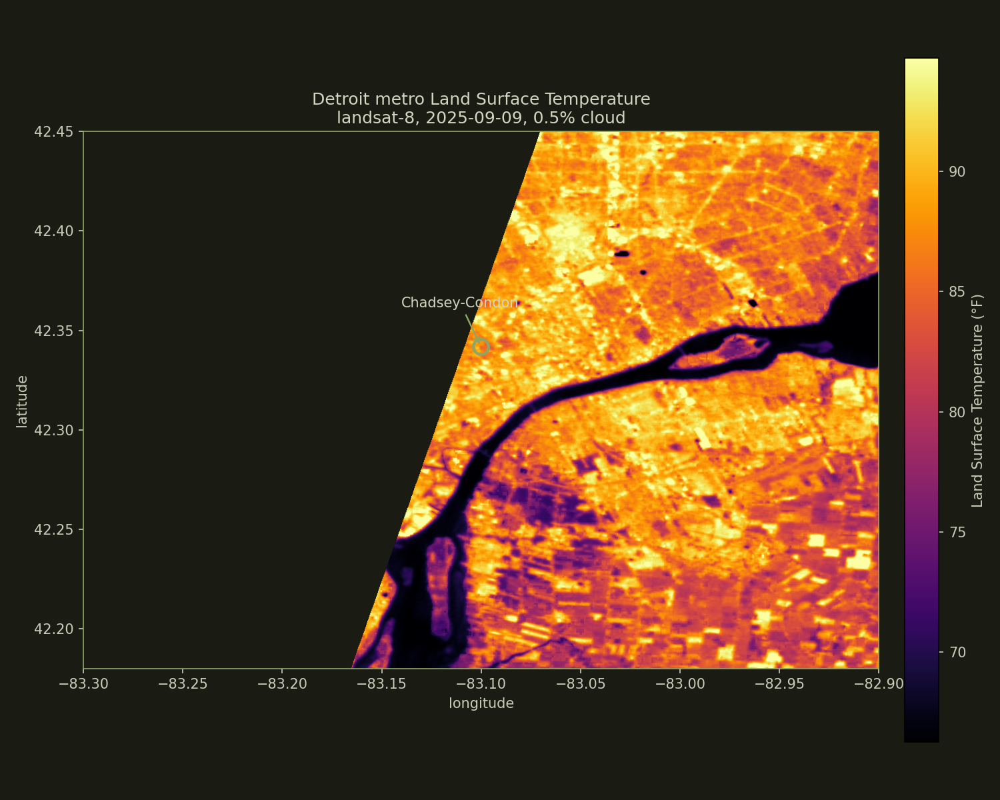

01 · The map
Detroit on a hot day
Land Surface Temperature for the Detroit metro on September 9, 2025 (Landsat 8, 0.5% cloud cover). Bright yellow and white pixels are hot impervious surfaces - parking lots, factory roofs, the freeway. Dark purple and black are cool - tree canopy, parks, the Detroit River. Every pixel is 30 meters across.

84.6°F
Detroit metro mean LST
Landsat 8, 2025-09-09
89.7°F
Chadsey-Condon mean LST
Same scene · same time
+5.1°F
Chadsey-Condon vs metro
Heat island differential
~120
Heat-related premature deaths in Detroit per year
Planet Detroit, 2025